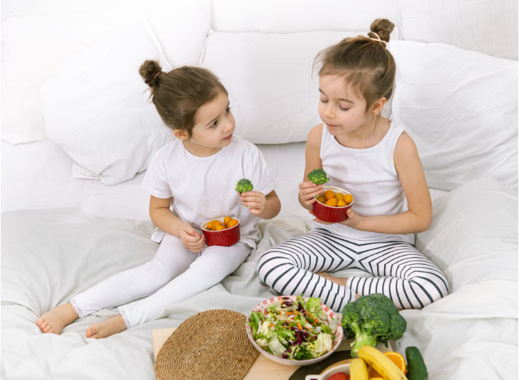
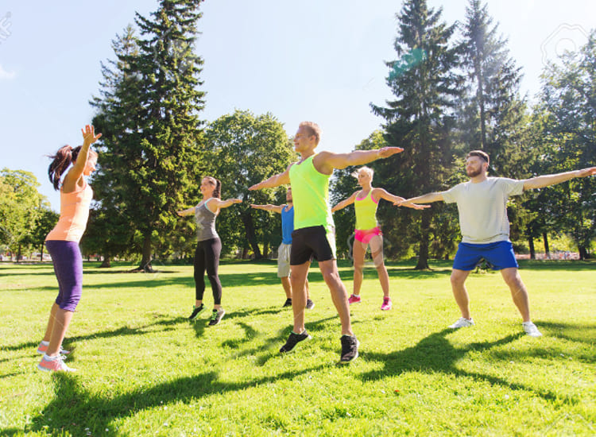

Actividades en grupo para asegurar la continuidad y cambio de habitos, con apoyo psicologico especializado




Actividades en grupo para asegurar la continuidad y cambio de habitos, con apoyo psicologico especializado
El programa mi mejor version cambio mi vida en todos sentidos, me costada levantarme a la manana y no tenia energia. Cambiar habitos me llevo a ser mas feliz.
Vivi tu experienciaVivia estresado con el trabajo y no dedicaba tiempo para mi, luego de una enfermedad autoinmune que se curo gracias al programa mi mejor version, llegue a conocerme y cuidarme como merezco.
Vivi tu experienciaMe sentia sola y deprimida por mi avanzada edad, hasta que una amiga me conto del plan. Todos los dias me levanto emocionada pensando en mis habitos y actividades.
Vivi tu experienciaMis hijos estaban grandes y senti un gran vacio. Mi mejor version me motivo para cambiar mi dia a dia y hoy en dia experimento una gran felicidad.
Vivi tu experienciaEra coach en un equipo que me costaba motivar, al yo no sentir que tenia esa motivacion. Luego del programa, me siento pleno y conecte con mi lado espiritual de una forma que no conocia.
Vivi tu experienciaEncontre en el programa amigos, y una dicha que jamas pense experimentar. Recomiendo Mi mejor version para cualquier persona, tenga la edad que tenga. Redescubrirse es unico y apasionante.
Vivi tu experiencia